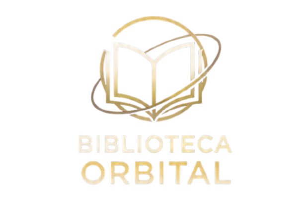

Biblioteca recebe certificação de excelência em 2026
A Biblioteca Orbital foi certificada pelo MEC como referência em serviços de informação acadêmica no Distrito Federal, destacando-se pelo acervo digital e atendimento especializado.
Ler mais →
Participação gratuita e aberta à comunidade. Inscreva-se no balcão ou por e-mail.
A Biblioteca Orbital foi certificada pelo MEC como referência em serviços de informação acadêmica no Distrito Federal, destacando-se pelo acervo digital e atendimento especializado.
Ler mais →Uma mostra itinerante de primeiras edições de obras clássicas da ficção científica percorrerá o hall da biblioteca durante todo o mês de novembro.
Ler mais →A biblioteca inaugura 10 novos cubículos de estudo individual com tomadas USB, iluminação ajustável e isolamento acústico, disponíveis para reserva online.
Ler mais →| Evento | Data | Horário | Status |
|---|---|---|---|
| Clube do Livro: Ficção Científica | Toda 1ª quinta do mês | 19h às 20h30 | Inscrições Abertas |
| Oficina de Normalização ABNT | 15/11/2026 | 14h às 17h | Vagas Limitadas |
| Palestra: Bases de Dados Acadêmicas | 22/11/2026 | 10h às 12h | Inscrições Abertas |
| Workshop: Scopus para Pesquisadores | 05/12/2026 | 14h às 16h | Esgotado |
| Oficina de Escrita Criativa | 12/12/2026 | 15h às 18h | Inscrições Abertas |